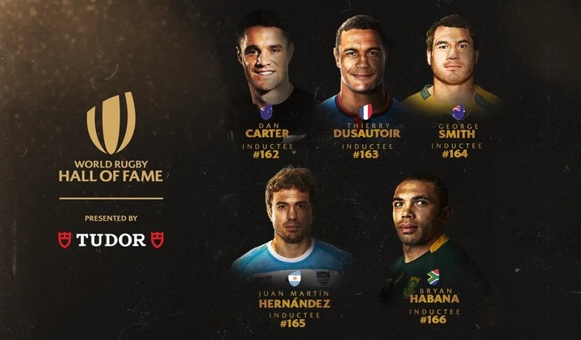

JUGADORES HISTÓTICOS DE RUGBY

- - Hugo Porta: Uno de los históricos de Los Pumas, fue incluido en 2008.
- - Agustín Pichot: Fue introducido en 2011.
- - Felipe Contepomi: Ingresó en 2017.
- - Juan Martín Hernández: El "Mago" fue el cuarto argentino en ser reconocido en 2023.
- - Dan Carter: El máximo anotador de puntos en la historia del rugby internacional.
- - Thierry Dusautoir: En 2011 fue nombrado Jugador del Año de World Rugby 15.
- - George Smith: Se convertiría posiblemente en la primera superestrella del rugby como ala abierto.
- - Bryan Habana: Miembro del Salón de la Fama de World Rugby.
- - George Nepia: Destacado fullback de los All Blacks.
- - Tony O'Reilly: Considerado el mejor wing europeo del siglo XX.
- - Frik du Preez: Estimado el mejor segunda línea africano del siglo XX.
El Salón de la Fama del Rugby Mundial reconoce a jugadores, entrenadores, administradores, árbitros de partidos, instituciones y otras personas.